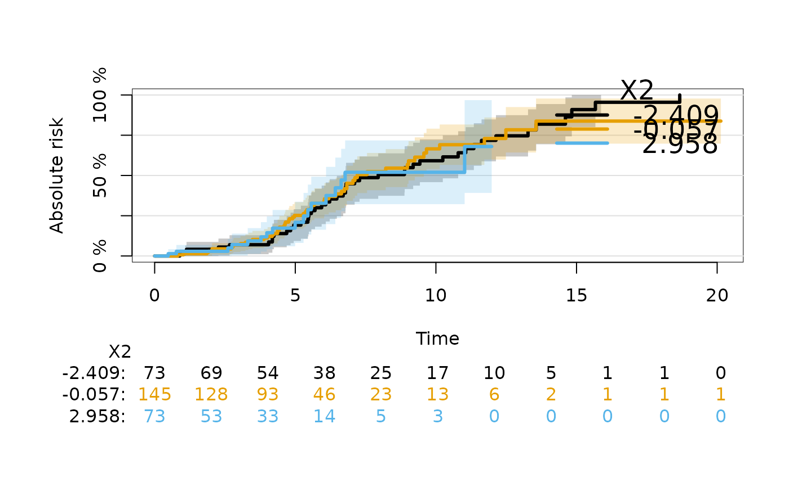

Estimation of censoring probabilities at subject specific times
Source:R/subjectWeights.R
subjectWeights.RdThis function is used internally to contruct pseudo values by inverse of the probability of censoring weights.
Usage
subjectWeights(
formula,
data,
method = c("cox", "marginal", "km", "nonpar", "forest", "none"),
args,
lag = 1
)Arguments
- formula
A survival formula like, Surv(time,status)~1 or Hist(time,status)~1 where status=0 means censored. The status variable is internally reversed for estimation of censoring rather than survival probabilities. Some of the available models, see argument
model, will use predictors on the right hand side of the formula.- data
The data used for fitting the censoring model
- method
Censoring model used for estimation of the (conditional) censoring distribution.
- args
Arguments passed to the fitter of the method.
- lag
If equal to
1then obtainG(T_i-|X_i), if equal to0estimate the conditional censoring distribution at the subject.times, i.e. (G(T_i|X_i)).
Value
- times
The times at which weights are estimated
- weights
Estimated weights at individual time values
subject.times- lag
The time lag.
- fit
The fitted censoring model
- method
The method for modelling the censoring distribution
- call
The call
Details
Inverse of the probability of censoring weights usually refer to the probabilities of not being censored at certain time points. These probabilities are also the values of the conditional survival function of the censoring time given covariates. The function subjectWeights estimates the conditional survival function of the censoring times and derives the weights.
IMPORTANT: the data set should be ordered, order(time,-status) in
order to get the weights in the right order for some choices of
method.
Author
Thomas A. Gerds tag@biostat.ku.dk
Examples
library(prodlim)
library(survival)
dat=SimSurv(300)
dat <- dat[order(dat$time,-dat$status),]
# using the marginal Kaplan-Meier for the censoring times
WKM=subjectWeights(Hist(time,status)~X2,data=dat,method="marginal")
plot(WKM$fit)
WKM$fit
#>
#> Call: prodlim::prodlim(formula = formula, data = data, reverse = TRUE)
#>
#> Kaplan-Meier estimator for the censoring time survival function
#>
#> No covariates
#>
#> Right-censored response of a survival model
#>
#> No.Observations: 300
#>
#> Pattern:
#> Freq
#> event 172
#> right.censored 128
WKM$weights
#> [1] 1.00000000 1.00000000 1.00000000 1.00000000 0.99663300 0.99663300
#> [7] 0.99663300 0.99663300 0.99663300 0.99321987 0.99321987 0.98979497
#> [13] 0.98979497 0.98635819 0.98292140 0.97948461 0.97604782 0.97604782
#> [19] 0.97604782 0.97604782 0.97604782 0.97604782 0.97604782 0.97604782
#> [25] 0.97604782 0.97604782 0.97604782 0.97604782 0.97247255 0.96889729
#> [31] 0.96889729 0.96889729 0.96889729 0.96889729 0.96889729 0.96525482
#> [37] 0.96161235 0.96161235 0.95795603 0.95795603 0.95795603 0.95427158
#> [43] 0.95058713 0.95058713 0.95058713 0.95058713 0.95058713 0.95058713
#> [49] 0.95058713 0.95058713 0.95058713 0.95058713 0.95058713 0.95058713
#> [55] 0.94673860 0.94673860 0.94673860 0.94673860 0.94673860 0.94673860
#> [61] 0.94673860 0.94673860 0.94277735 0.94277735 0.93879939 0.93879939
#> [67] 0.93480450 0.93480450 0.93480450 0.93077517 0.93077517 0.92672832
#> [73] 0.92268147 0.92268147 0.92268147 0.92268147 0.92268147 0.92268147
#> [79] 0.92268147 0.92268147 0.91850644 0.91850644 0.91850644 0.91850644
#> [85] 0.91850644 0.91850644 0.91850644 0.91421436 0.91421436 0.91421436
#> [91] 0.91421436 0.90986095 0.90550755 0.90550755 0.90550755 0.90550755
#> [97] 0.90550755 0.90106879 0.90106879 0.90106879 0.90106879 0.89656345
#> [103] 0.89656345 0.89656345 0.89656345 0.89656345 0.89196568 0.89196568
#> [109] 0.88734410 0.88734410 0.88734410 0.88734410 0.88734410 0.88734410
#> [115] 0.88259895 0.88259895 0.88259895 0.87780221 0.87780221 0.87780221
#> [121] 0.87780221 0.87780221 0.87780221 0.87287074 0.87287074 0.86791125
#> [127] 0.86295175 0.85799226 0.85303277 0.85303277 0.85303277 0.85303277
#> [133] 0.85303277 0.85303277 0.84792479 0.84281681 0.84281681 0.84281681
#> [139] 0.84281681 0.84281681 0.84281681 0.84281681 0.83751607 0.83751607
#> [145] 0.83218157 0.83218157 0.83218157 0.83218157 0.82674248 0.82674248
#> [151] 0.82126736 0.81579225 0.81579225 0.81028014 0.81028014 0.80473027
#> [157] 0.80473027 0.80473027 0.80473027 0.80473027 0.80473027 0.80473027
#> [163] 0.80473027 0.80473027 0.79885633 0.79885633 0.79885633 0.79885633
#> [169] 0.79284989 0.78684345 0.78684345 0.78079081 0.77473817 0.76868553
#> [175] 0.76263288 0.75658024 0.75052760 0.74447496 0.74447496 0.73837271
#> [181] 0.73227045 0.72616820 0.72006594 0.71396369 0.71396369 0.70780883
#> [187] 0.70165397 0.70165397 0.70165397 0.70165397 0.69533276 0.68901156
#> [193] 0.68901156 0.68901156 0.68257220 0.68257220 0.67607151 0.67607151
#> [199] 0.66950771 0.66950771 0.66287892 0.66287892 0.65618317 0.64948743
#> [205] 0.64279168 0.64279168 0.64279168 0.64279168 0.64279168 0.63580481
#> [211] 0.62881795 0.62881795 0.62175258 0.61468721 0.60762184 0.60762184
#> [217] 0.60047334 0.59332485 0.58617636 0.57902787 0.57902787 0.57902787
#> [223] 0.57902787 0.57160443 0.56418100 0.55675757 0.54933413 0.54191070
#> [229] 0.53448726 0.53448726 0.52695927 0.51943128 0.51943128 0.51179259
#> [235] 0.50415389 0.50415389 0.49639768 0.48864147 0.48088525 0.47312904
#> [241] 0.46537282 0.46537282 0.45748515 0.45748515 0.44945909 0.44143304
#> [247] 0.43340698 0.43340698 0.43340698 0.42507223 0.41673748 0.41673748
#> [253] 0.40823264 0.40823264 0.40823264 0.40823264 0.39916080 0.39008896
#> [259] 0.39008896 0.39008896 0.38057460 0.38057460 0.38057460 0.37055948
#> [265] 0.36054436 0.35052924 0.35052924 0.35052924 0.35052924 0.33957520
#> [271] 0.32862116 0.32862116 0.31728940 0.31728940 0.31728940 0.31728940
#> [277] 0.30459782 0.30459782 0.29135444 0.27811105 0.26486767 0.25162429
#> [283] 0.25162429 0.23764516 0.23764516 0.22279234 0.22279234 0.22279234
#> [289] 0.20565446 0.20565446 0.18695860 0.16826274 0.16826274 0.14722990
#> [295] 0.12619706 0.10516421 0.10516421 0.07887316 0.05258211 0.02629105
# using the Cox model for the censoring times given X2
WCox=subjectWeights(Surv(time,status)~X2,data=dat,method="cox")
WCox
#>
#> Estimated inverse of the probability of censoring weights (subjectWeights)
#>
#> Method for estimation: Cox regression
#> Handler function: function (formula = formula(data), data = environment(formula), weights, subset, na.action = na.delete, method = c("efron", "breslow", "exact", "model.frame", "model.matrix"), singular.ok = FALSE, robust = FALSE, model = FALSE, x = FALSE, y = FALSE, se.fit = FALSE, linear.predictors = TRUE, residuals = TRUE, nonames = FALSE, eps = 1e-04, init, iter.max = 10, tol = 1e-09, surv = FALSE, time.inc, type = NULL, vartype = NULL, debug = FALSE, ...)
#> {
#> method <- match.arg(method)
#> call <- match.call()
#> if (!inherits(formula, "formula")) {
#> if (inherits(formula, "Surv")) {
#> xx <- function(x) formula(x)
#> formula <- xx(paste(deparse(substitute(formula)), 1, sep = "~"))
#> }
#> else stop("Invalid formula")
#> }
#> callenv <- parent.frame()
#> weights <- if (!missing(weights))
#> eval(substitute(weights), data, callenv)
#> subset <- if (!missing(subset))
#> eval(substitute(subset), data, callenv)
#> data <- modelData(data, formula, weights = weights, subset = subset, na.action = na.action, dotexpand = FALSE, callenv = callenv)
#> nstrata <- 0
#> Strata <- NULL
#> odb <- .Options$debug
#> if (length(odb) && is.logical(odb) && odb)
#> debug <- TRUE
#> if (length(z <- attr(terms(formula, allowDotAsName = TRUE), "term.labels")) > 0 && any(z != ".")) {
#> X <- Design(data, formula, specials = c("strat", "strata"))
#> atrx <- attributes(X)
#> atr <- atrx$Design
#> nact <- atrx$na.action
#> sformula <- atrx$sformula
#> mmcolnames <- atr$mmcolnames
#> if (method == "model.frame")
#> return(X)
#> Terms <- terms(sformula, specials = c("strat", "strata"), data = data)
#> asm <- atr$assume.code
#> name <- atr$name
#> specials <- attr(Terms, "specials")
#> if (length(specials$strata))
#> stop("cph supports strat(), not strata()")
#> stra <- specials$strat
#> cluster <- attr(X, "cluster")
#> if (length(cluster)) {
#> if (missing(robust))
#> robust <- TRUE
#> attr(X, "cluster") <- NULL
#> }
#> Terms.ns <- Terms
#> if (length(stra)) {
#> temp <- untangle.specials(Terms.ns, "strat", 1)
#> Terms.ns <- Terms.ns[-temp$terms]
#> Strata <- list()
#> strataname <- attr(Terms, "term.labels")[stra - 1]
#> j <- 0
#> for (i in (1:length(asm))[asm == 8]) {
#> nstrata <- nstrata + 1
#> xi <- X[[i + 1]]
#> levels(xi) <- paste(name[i], "=", levels(xi), sep = "")
#> Strata[[nstrata]] <- xi
#> }
#> Strata <- interaction(as.data.frame(Strata), drop = TRUE)
#> }
#> xpres <- length(asm) && any(asm != 8)
#> Y <- model.extract(X, "response")
#> if (!inherits(Y, "Surv"))
#> stop("response variable should be a Surv object")
#> n <- nrow(Y)
#> weights <- model.extract(X, "weights")
#> offset <- attr(X, "offset")
#> if (!xpres) {
#> X <- matrix(nrow = 0, ncol = 0)
#> assign <- NULL
#> }
#> else {
#> X <- model.matrix(sformula, X)
#> alt <- attr(mmcolnames, "alt")
#> if (debug) {
#> print(cbind(`colnames(X)` = colnames(X)[-1], mmcolnames = mmcolnames, `Design colnames` = atr$colnames, alt = alt))
#> }
#> if (!all(mmcolnames %in% colnames(X)) && length(alt))
#> mmcolnames <- alt
#> X <- X[, mmcolnames, drop = FALSE]
#> assign <- attr(X, "assign")
#> assign[[1]] <- NULL
#> }
#> nullmod <- FALSE
#> }
#> else {
#> X <- NULL
#> Y <- data[[1]]
#> sformula <- formula
#> mmcolnames <- ""
#> weights <- if ("(weights)" %in% names(data))
#> data[["(weights)"]]
#> atr <- atrx <- NULL
#> Terms <- terms(formula, allowDotAsName = TRUE)
#> if (!inherits(Y, "Surv"))
#> stop("response variable should be a Surv object")
#> Y <- Y[!is.na(Y)]
#> assign <- NULL
#> xpres <- FALSE
#> nullmod <- TRUE
#> nact <- NULL
#> }
#> ny <- ncol(Y)
#> maxtime <- max(Y[, ny - 1])
#> rnam <- if (!nonames)
#> dimnames(Y)[[1]]
#> if (xpres)
#> dimnames(X) <- list(rnam, atr$colnames)
#> if (method == "model.matrix")
#> return(X)
#> time.units <- units(Y)
#> if (!length(time.units) || time.units == "")
#> time.units <- "Day"
#> if (missing(time.inc)) {
#> time.inc <- switch(time.units, Day = 30, Month = 1, Year = 1, maxtime/10)
#> if (time.inc >= maxtime | maxtime/time.inc > 25)
#> time.inc <- max(pretty(c(0, maxtime)))/10
#> }
#> ytype <- attr(Y, "type")
#> if (nullmod)
#> f <- NULL
#> else {
#> fitter <- if (method == "breslow" || method == "efron") {
#> if (ytype == "right")
#> coxph.fit
#> else agreg.fit
#> }
#> else if (method == "exact") {
#> if (ytype == "right")
#> getFromNamespace("coxexact.fit", "survival")
#> else agexact.fit
#> }
#> else stop(paste("Unknown method", method))
#> if (missing(init))
#> init <- NULL
#> f <- fitter(X, Y, strata = Strata, offset = offset, weights = weights, init = init, method = method, rownames = rnam, control = coxph.control(eps = eps, toler.chol = tol, toler.inf = 1, iter.max = iter.max))
#> }
#> if (is.character(f)) {
#> cat("Failure in cph:\n", f, "\n")
#> return(structure(list(fail = TRUE), class = "cph"))
#> }
#> else {
#> if (length(f$coefficients) && any(is.na(f$coefficients))) {
#> vars <- names(f$coefficients)[is.na(f$coefficients)]
#> msg <- paste("X matrix deemed to be singular; variable", paste(vars, collapse = " "))
#> if (singular.ok)
#> warning(msg)
#> else {
#> cat(msg, "\n")
#> return(structure(list(fail = TRUE), class = "cph"))
#> }
#> }
#> }
#> f$terms <- Terms
#> f$sformula <- sformula
#> f$mmcolnames <- mmcolnames
#> if (robust) {
#> f$naive.var <- f$var
#> if (!length(cluster))
#> cluster <- FALSE
#> fit2 <- c(f, list(x = X, y = Y, weights = weights, method = method))
#> if (length(stra))
#> fit2$strata <- Strata
#> r <- getS3method("residuals", "coxph")(fit2, type = "dfbeta", collapse = cluster, weighted = TRUE)
#> f$var <- t(r) %*% r
#> }
#> nvar <- length(f$coefficients)
#> ev <- factor(Y[, ny], levels = 0:1, labels = c("No Event", "Event"))
#> n.table <- {
#> if (!length(Strata))
#> table(ev, dnn = "Status")
#> else table(Strata, ev, dnn = c("Stratum", "Status"))
#> }
#> f$n <- n.table
#> nevent <- sum(Y[, ny])
#> if (xpres) {
#> logtest <- -2 * (f$loglik[1] - f$loglik[2])
#> R2.max <- 1 - exp(2 * f$loglik[1]/n)
#> R2 <- (1 - exp(-logtest/n))/R2.max
#> P <- 1 - pchisq(logtest, nvar)
#> gindex <- GiniMd(f$linear.predictors)
#> dxy <- dxy.cens(f$linear.predictors, Y, type = "hazard")["Dxy"]
#> stats <- c(n, nevent, logtest, nvar, P, f$score, 1 - pchisq(f$score, nvar), R2, dxy, gindex, exp(gindex))
#> names(stats) <- c("Obs", "Events", "Model L.R.", "d.f.", "P", "Score", "Score P", "R2", "Dxy", "g", "gr")
#> }
#> else {
#> stats <- c(n, nevent)
#> names(stats) <- c("Obs", "Events")
#> }
#> f$method <- NULL
#> if (xpres)
#> dimnames(f$var) <- list(atr$colnames, atr$colnames)
#> f <- c(f, list(call = call, Design = atr, assign = DesignAssign(atr, 0, atrx$terms), na.action = nact, fail = FALSE, non.slopes = 0, stats = stats, method = method, maxtime = maxtime, time.inc = time.inc, units = time.units))
#> if (xpres) {
#> f$center <- sum(f$means * f$coefficients)
#> f$scale.pred <- c("log Relative Hazard", "Hazard Ratio")
#> attr(f$linear.predictors, "strata") <- Strata
#> names(f$linear.predictors) <- rnam
#> if (se.fit) {
#> XX <- X - rep(f$means, rep.int(n, nvar))
#> se.fit <- drop(((XX %*% f$var) * XX) %*% rep(1, ncol(XX)))^0.5
#> names(se.fit) <- rnam
#> f$se.fit <- se.fit
#> }
#> }
#> if (model)
#> f$model <- data
#> if (is.character(surv) || surv) {
#> if (length(Strata)) {
#> iStrata <- as.character(Strata)
#> slev <- levels(Strata)
#> nstr <- length(slev)
#> }
#> else nstr <- 1
#> srv <- NULL
#> tim <- NULL
#> s.e. <- NULL
#> timepts <- seq(0, maxtime, by = time.inc)
#> s.sum <- array(double(1), c(length(timepts), nstr, 3), list(format(timepts), paste("Stratum", 1:nstr), c("Survival", "n.risk", "std.err")))
#> g <- list(n = sum(f$n), coefficients = f$coefficients, linear.predictors = f$linear.predictors, method = f$method, type = type, means = f$means, var = f$var, x = X, y = Y, strata = Strata, offset = offset, weights = weights, terms = Terms, call = call)
#> g <- survfit.cph(g, se.fit = is.character(surv) || surv, type = type, vartype = vartype, conf.type = "log")
#> strt <- if (nstr > 1)
#> rep(names(g$strata), g$strata)
#> for (k in 1:nstr) {
#> j <- if (nstr == 1)
#> TRUE
#> else strt == slev[k]
#> yy <- Y[if (nstr == 1)
#> TRUE
#> else iStrata == slev[k], ny - 1]
#> maxt <- max(yy)
#> tt <- c(0, g$time[j])
#> su <- c(1, g$surv[j])
#> se <- c(NA, g$std.err[j])
#> if (maxt > tt[length(tt)]) {
#> tt <- c(tt, maxt)
#> su <- c(su, su[length(su)])
#> se <- c(se, NA)
#> }
#> kk <- 0
#> for (tp in timepts) {
#> kk <- kk + 1
#> t.choice <- max((1:length(tt))[tt <= tp + 1e-06])
#> if (tp > max(tt) + 1e-06 & su[length(su)] > 0) {
#> Su <- NA
#> Se <- NA
#> }
#> else {
#> Su <- su[t.choice]
#> Se <- se[t.choice]
#> }
#> n.risk <- sum(yy >= tp)
#> s.sum[kk, k, 1:3] <- c(Su, n.risk, Se)
#> }
#> if (!is.character(surv)) {
#> if (nstr == 1) {
#> tim <- tt
#> srv <- su
#> s.e. <- se
#> }
#> else {
#> tim <- c(tim, list(tt))
#> srv <- c(srv, list(su))
#> s.e. <- c(s.e., list(se))
#> }
#> }
#> }
#> if (is.character(surv))
#> f$surv.summary <- s.sum
#> else {
#> if (nstr > 1) {
#> names(srv) <- names(tim) <- names(s.e.) <- levels(Strata)
#> }
#> f <- c(f, list(time = tim, surv = srv, std.err = s.e., surv.summary = s.sum))
#> }
#> }
#> f$strata <- Strata
#> if (x)
#> f$x <- X
#> if (y)
#> f$y <- Y
#> f$weights <- weights
#> f$offset <- offset
#> if (!linear.predictors)
#> f$linear.predictors <- NULL
#> if (!residuals)
#> f$residuals <- NULL
#> class(f) <- c("cph", "rms", "coxph")
#> f
#> }()
#>
#> Summary of the weights G(T_i-|X_i) :
#>
#> Min. 1st Qu. Median Mean 3rd Qu. Max.
#> 0.0392 0.5643 0.8254 0.7273 0.9247 1.0000
plot(WCox$weights,WKM$weights)
# using the stratified Kaplan-Meier for the censoring times given X2
WKM2 <- subjectWeights(Surv(time,status)~X2,data=dat,method="nonpar")
plot(WKM2$fit,add=FALSE)
